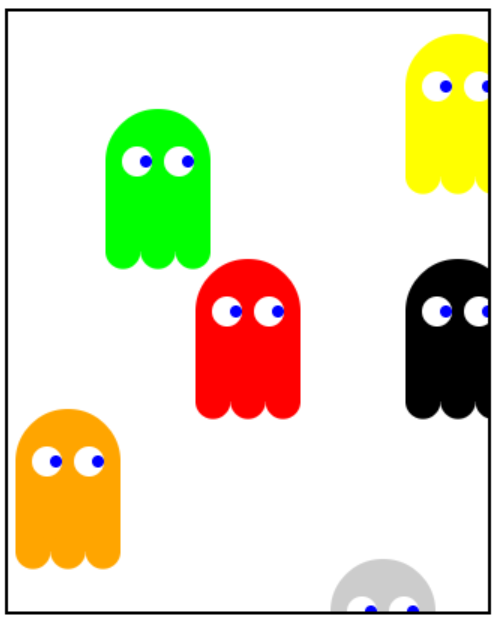

Write a program to draw ghosts on the screen. You must do this by writing a function called drawGhost,
which takes three parameters, the center x location of the ghost, the center y location of the ghost
and the color of the ghost.
編寫一個程序來繪製鬼在屏幕上。你必須寫一個名為畫鬼函數，它接受三個參數，鬼的中心x的位置，
鬼中央y位置和鬼魂的顏色做到這一點。
function drawGhost(cx, cy, color){
}
功能畫鬼(cx, cy, 顏色){
}
// Constants for main ghost body var HEAD_RADIUS = 35; var BODY_WIDTH = HEAD_RADIUS * 2; var BODY_HEIGHT = 60; var NUM_FEET = 3; var FOOT_RADIUS = (BODY_WIDTH) / (NUM_FEET * 2); // Constants for eyes var PUPIL_RADIUS = 4; var PUPIL_LEFT_OFFSET = 8; var PUPIL_RIGHT_OFFSET = 20; var EYE_RADIUS = 10; var EYE_OFFSET = 14; //常量主鬼身 可變 頭_半徑 = 35; 可變 體_寬度 = 頭_半徑 * 2; 可變 體_高度 = 60; 可變 數_腳 = 3; 可變 腳_半徑 = (體_寬度) / (數_腳 * 2); //常量的眼睛 可變 瞳_半徑 = 4; 可變 瞳_左_偏移 = 8; 可變 瞳_右_偏移 = 20; 可變 眼_半徑 = 10; 可變 眼_偏移 = 14;
Here is a screenshot of a sample run of the ghosts program with these function calls.
function start(){
var cx = getWidth()/2;
var cy = getHeight()/2;
drawGhost(cx, cy, Color.red);
drawGhost(100,100, Color.green);
drawGhost(300, 200, Color.black);
drawGhost(40, 300, Color.orange);
drawGhost(300, 50, Color.yellow);
}
Why not try adding more calls and more ghosts?
下面是這些函數調用的鬼節目的樣品運行的屏幕截圖。
函數的開始（）{
可變 cx = 獲得寬()/2;
可變 cy = 得到高度()/2;
畫鬼(cx, cy, 顏色。紅);
畫鬼(100,100, 顏色。綠色);
畫鬼(300, 200, 顏色。黑);
畫鬼(40, 300, 顏色。橙 );
畫鬼(300, 50, 顏色。黃);
}
為什麼不嘗試增加更多的電話和更多的鬼嗎？
BIG HINT: Use the drawCircle function we wrote earlier!
The constants for all of the ghost dimensions are given.
Start off with something simpler. Try just drawing the general ghost shape, which is a circle and then a rectangle right on it. cx and cy for the ghost define where the center of the head should go
大提示：使用我們前面寫的抽獎圈子的功能！
對於所有的鬼尺寸的常數給出。
用最簡單的開始吧。嘗試剛剛繪製的一般幽靈的形狀，這是一個圓，然後在其上的矩形右邊。 cx和cy的鬼限定，其中頭部的中心應該去。